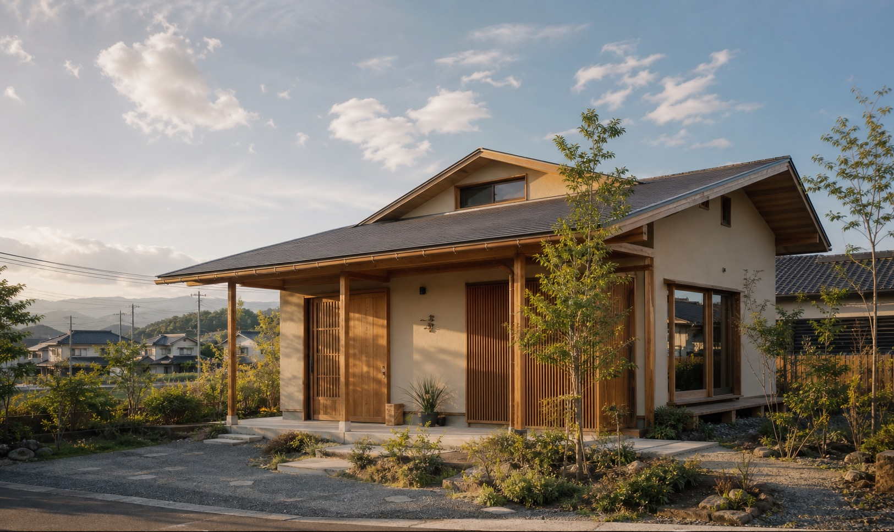
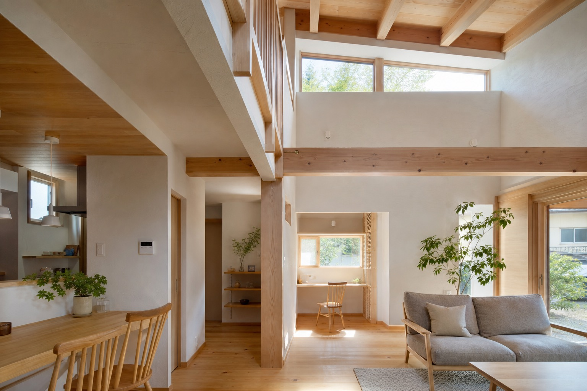
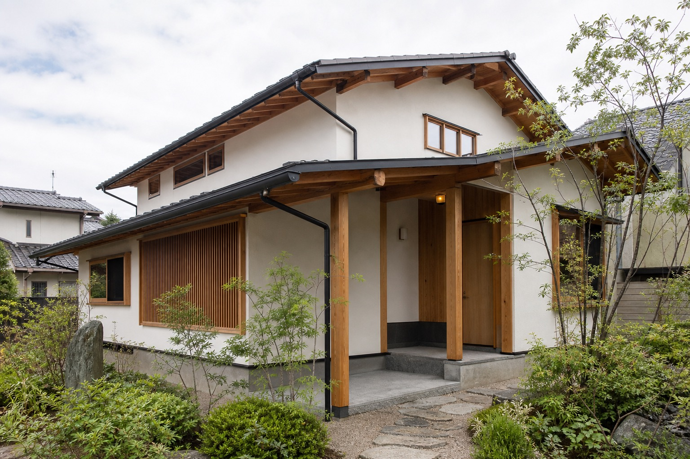
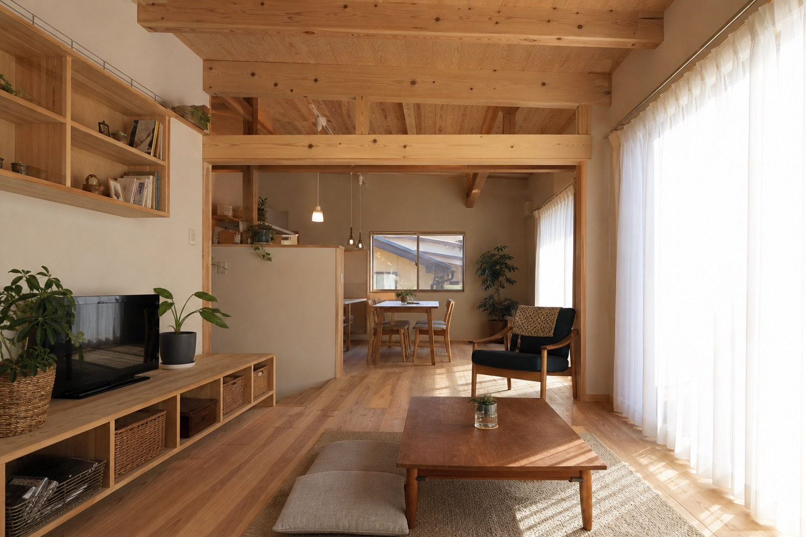
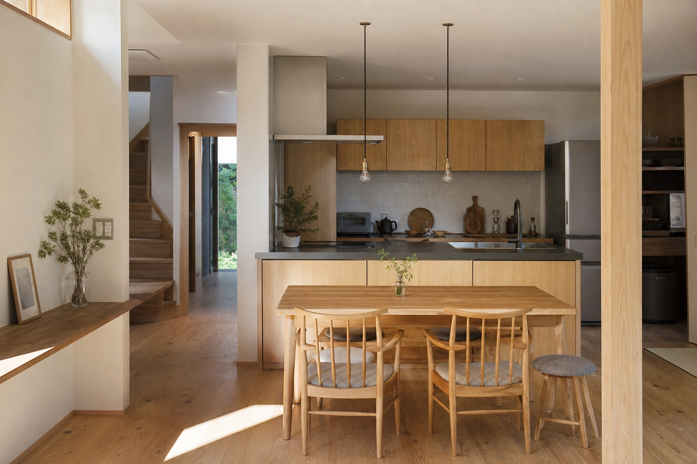

新築・設計
暮らしやすさと空気環境を考えた住まいづくり。エアサイクル登録番号の記載があるため、性能面の導線も作れます。

仮画像Miyagi Osaki / Since 1980
大崎市古川で、新築・設計、リフォーム・修理、官公庁系業務まで手がける檜工務店の提案用リニューアルデモです。
公式サイトにある「元気の出る住宅」「心のあるサービス」という言葉を、写真と余白で伝わる体験に再編集します。
創業は昭和55年。大工から始まった工務店らしさを、過度な装飾ではなく、木の質感、現場感、相談しやすさとして表現します。

仮画像既存サイトで確認できる事業領域だけに絞り、営業先が一目で理解できる構成へ整理します。
暮らしやすさと空気環境を考えた住まいづくり。エアサイクル登録番号の記載があるため、性能面の導線も作れます。
窓の施工など、既存サイトの施工事例にある小回りのきく工事を、相談導線へつなげます。
住宅だけでなく、公共性のある建築業務にも対応していることを信頼材料として整理します。
大工から事業へ転身した背景を、老舗工務店らしい信頼として表現。
公式サイト記載の実績表現を、過度に大きく見せず誠実に掲載。
建築士、建築施工管理技士、大工技能士などの資格情報を会社概要に反映。
エアサイクル、住宅あんしん保証、耐震改修、既存住宅状況調査などの確認済み情報を掲載。
下記は仮画像です。公開時は公式サイト掲載の実写真や、新規撮影素材へ差し替える前提です。

仮画像
仮画像
仮画像既存サイトで確認できる施工事例例
公式サイトでは、新築・リフォームの無料相談を電話またはメールフォームで受け付け、毎日（土日可能）AM10時からPM9時まで相談員が対応すると案内されています。
相談フォームへ進む新築・リフォームの相談を自然に受けられるよう、電話とフォームの両方を見やすく配置します。
0229-91-8155 相談受付 AM10:00-PM9:00（土日可能）